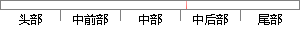

偏差变化率瞬时过大，应取较小 值，同样 为了
片段位置图

相似结果
相似片段：
化的偏差e和偏差变化率ec，根据经验，KP，KI，KD的整定原则如下： (1)当偏差e较大时，误差较大，为使系统有较快的响应速度，应取较大的KP；为了防止偏差变化率ec瞬时过大，应取较小的KD；为了避免较大的超调，应对积分作用加以限制，通常取KI=0。 (2)当偏差e处于中等大小时，为使系统相应具有较小的超调，KP应取得小些，KI取值要适当，这
| 对比库： | WriteCheck云资源库 |
| 来源： | partinchina.com.cn 查看来源 |
| 发布时间： | 2012-12-12 |
| 相似率 | 87.5% （严重抄袭） |